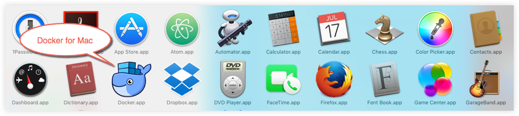
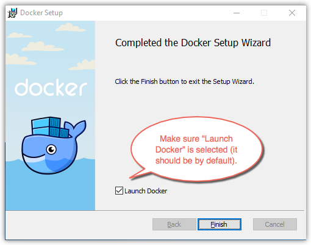
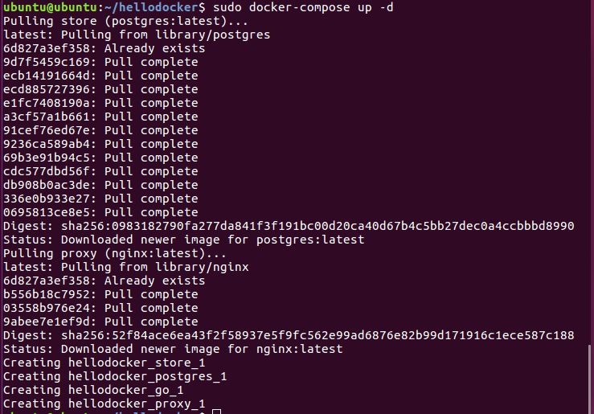

Docker was released in 2013 by dotCloud. The project was quickly open-sourced and made available on GitHub. The popularity of Docker skyrocketed and within a year nearly everyone in the industry had heard of it, but many were still unsure what it was exactly, and why people were so excited about.
What is Docker?
Docker is the world’s leading software container platform. Docker is a tool that allows you to encapsulated computer environments. Each encapsulated computer environment has its own running copy of Linux and is called a container. Containers wrap up your software in a complete filesystem that contains everything it needs to run: code, runtime, system tools, system libraries – anything that you can install on a server. This guarantees that your software will always run the same, regardless of the environment it is running in.
Docker is not a container, nor did it invent containers. Docker simply interacts with your operating system and uses the resource isolation features of the Linux kernel such as cgroups, kernel namespaces, and chroot to create containers using your system. Each container shares the host computer's copy of the kernel. This means there's no hypervisor, and no extended bootup. Initializing a Docker container is lightweight and super fast. Features of Docker include:
- Isolating an application's dependencies
- Duplicating an application image
- Creating ready to run applications that are easily distributable
- Allowing easy and fast scalation
- Sandbox testing of applications
Why Docker?
There are many reasons to use Docker. Developers use Docker to eliminate the “works on my computer” problems when collaborating with co-workers. Users can use Docker to run multiple applications at once in isolated containers to get better performance. Companies use Docker for software delivery pipelines to ship new features faster, more securely and without concern for environment. The benefits of Docker include:
- Extremely easy to use
- Inexpensive
- Low CPU/memory overhead
- Fast boot/shutdown
- Cross cloud infrastructure
Vagrant (VMs) vs Docker
Before Docker, the best way to ship an application reliably was with virtual machines. Vagrant was used to build and maintain the VMs so that they were all in sync. The problem with VMs are that they ship too much, they package lot of information which is not required like the hard drive, virtual processors, and network interfaces. They also are slow to start and consume a significant amount of memory and CPU. Docker serves as a VM, but with a faster startup and with less resource consumption.
Terminology
Docker Containers
Actual runtime instance of applications and includes a Docker image, execution environment, and a standard set of instructions
Docker Images
Ready-only templates that help launch Docker containers.
DockerFile
Text document that contains all the commands you would normally execute manually in order to build a Docker image. Docker can build images automatically by reading the instructions from a Dockerfile.
Docker Client
User interface that allows communication between the user and the Docker daemon.
Docker Daemon
Sits on the host machine answering requests for services.
Docker Hub
Centralized resource for working with Docker and its components. It provides the following services:
Docker image hosting
User authentication
Automated image builds and work-flow tools such as build triggers and web hooks
Integration with GitHub and Bitbucket
Below is an image showing some of the docker commands and how they relate to the components of Docker
Below is a diagam showing how Docker can work (Windows/Mac OS pc). Notice the Dockerfile is part of the source code that then goes to build the Docker Image running on boot2docker, which is a lightweight Linux distribution made specifically to run Docker containers. This image can then run the container locally or be pushed to the Docker Hub. This remote image can then be ran on a server or ran many times as a swarm.
Docker Variants
- Docker Enterprise Edition(Docker EE)
Docker EE is mostly used for enterprise as well as IT teams to run business applications at scale. It is integrated, certified and supported to fully satisfy the business needs of security and modernization. For more information see Docker Enterprise Edition.
- Docker Community Edition(Docker CE)
Docker CE is designed for developers and small teams to get started with Docker and try out different container-based applications. It is available on many platforms such as MacOS, Windows and Linux. Docker gives two options for community edition. Stable builds are released once per quarter. Edge builds are released once per month. For more information see Docker Community Edition.
Install Docker and run hello-world
- Step 1: Get Docker
Docker for Mac
Docker for Windows
For instructions to install Docker on various Linux distributions, see here.
For instructions on how to install Docker toolbox, see here. Note Docker toolbox is only needed for older versions of Mac and Windows that do not meet requirements for installing Docker.
- Step 2: Install Docker
Install Docker on Mac
- Double-click Docker.dmg to open the installer, then drag Moby the whale to the Applications folder.

- Double-click Docker.app to start Docker.

- Click the whale to get Preferences and other options.

- Select About Docker to verify that you have the latest version.
- Open a command-line terminal, type docker run hello-world to test pulling an image from Docker Hub and starting a container.
- For more examples and helpful commands, see here.
Install Docker for Windows
- Double-click InstallDocker.msi to run the installer.
- Follow the install wizard to accept the license, authorize the installer, and proceed with the install.
- Click Finish on the setup complete dialog to launch Docker.

- Run some Docker commands, such as docker ps, docker version, and docker info.
- Run docker run hello-world to test pulling an image from Docker Hub and starting a container.
docker run hello-world
- You can even try something ambitious and run an Ubuntu container using this command.
docker run -it ubuntu bash
Install Docker CE using the repository for Ubuntu
- Install packages to allow apt to use a repository over HTTPS:
- Add Docker's official GPG key:
- Use the following command to set up the stable repository. You always need the stable repository, even if you want to install edge builds as well.
- Update the apt package index.
- Install the latest version of Docker, or go to the next step to install a specific version. Any existing installation of Docker is replaced.
- On production systems, you should install a specific version of Docker instead of always using the latest. This output is truncated. List the available versions. For Docker EE customers, use docker-ee where you see docker-ce.
- Verify that Docker CE or Docker EE is installed correctly by running the hello-world image.
Alternatively, you can install docker using a shell script .
For more information on installing docker for Ubuntu, see Get Docker for Ubuntu
- Verify installation
- Open a command-line terminal, and run some Docker commands to verify that Docker is working as expected. Some good commands to try are docker version to check that you have the latest release installed and docker ps to see if you have any running containers.
- Type the docker run hello-world command and press RETURN.The command does some work for you, if everything runs well, the command's output looks like this:
- Run docker ps -a to show all containers on the system.
Example commands using hellodocker project
NOTE: hellodocker project
Compose is a tool for defining and running multi-container Docker applications. With Compose, you use a Compose file to configure your application's services. Then, using a single command, you create and start all the services from your configuration.
Screenshots of the commands and correct responses necessary to link containers for an application:
This clones the open github repository with 4 containers:
- 1 data-only container. This is where Postgres' data will live.
- 1 Postgres container.
- 1 Go container. This container will house the Go app.
- 1 Nginx container. This will be used as a reverse proxy between Go and the
web.
Downloads docker-compose
"chmod ..." command applies executable permissions to the binary file
"docker-compose build" command uses the docker-compose.yml file to connect each container

This command starts and runs the entire application
A screenshot of the web server running on localhost port 8080